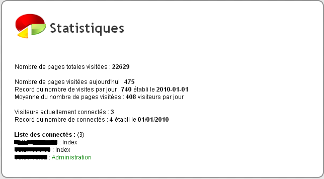
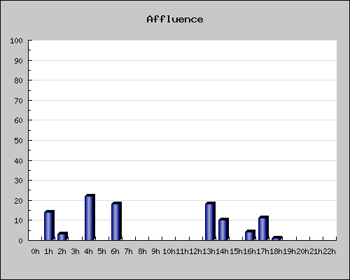

Référencement, publicité, vous devez les maîtriser pour pouvoir mettre votre site en valeur. Mais, afin d'optimiser un maximum vos efforts, pourquoi ne pas faire des statistiques ?
Par statistiques, j'entends à la fois vos performances (visiteurs connectés, nombre maximum de visiteurs connectés, pages visitées) mais aussi l'impact qu'a votre publicité sur les utilisateurs (provenance, intérêt). Celles-ci vont vous permettre de pouvoir gérer vous-mêmes vos campagnes afin de faire connaître le mieux possible votre site !
Ce tutoriel est une sorte de cours / TP guidé, garni d'infos qui vont vous permettre de mettre pleins de statistiques partout sur votre site. :soleil:
nombre de visites par jour (nombre moyen, nombre maximum).
Nombre de visites
Nous avons juste à stocker un nombre, celui du nombre de visites. En effet, ce script s'exécute sur toutes les pages de votre site. À chaque visite on devra incrémenter ce nombre.
Il est évident que nous n'allons pas stocker ce nombre dans une base de données SQL, la connexion est bien trop lente et si on devait se reconnecter à chaque ouverture de page pour afficher UN NOMBRE, le serveur ralentirait inutilement.
Un fichier contenant ce nombre semble donc parfaitement indiqué. On rangera tous les scripts de ce tutoriel dans un dossier "stats". Ce fichier s'appellera visiteurs.txt et il contiendra une seule ligne, le nombre de visiteurs. Pour faire marcher votre script à la première utilisation, on l'initialise en mettant comme valeur 0.
Voici comment se divisera votre script :
ouverture en lecture et écriture du fichier visiteurs.txt ;
lecture de l'unique ligne du fichier contenant le nombre de visiteurs ;
incrémentation de ce nombre ;
écriture du nombre incrémenté dans le fichier ;
affichage du nombre incrémenté.
Nous utiliserons l'extension mysqli_ dans ce tutoriel. Avant tout le script du tutoriel, on se connecte à notre base de données comme ceci :
Comme vous pouvez le voir, ce n'était pas compliqué. :p
On attaque le...
Nombre de visites par jour
Vous l'aurez compris, ce script est applicable pour les mois, les années, bref ici on prendra les jours car c'est le plus utilisé. Votre mission (si vous l'acceptez :soleil: ) sera d'obtenir les statistiques suivantes pour les afficher sur votre site :
nombre de visites aujourd'hui ;
garder en mémoire les nombres de visites de chaque jour ;
afficher le nombre maximum de visites en un jour suivi de la mention « Établi le ...» ;
faire la moyenne du nombre de visites par jour.
Eh oui, ça se complexifie. :-°
Allez, cette fois je donne pas plus d'indications. ;)
Bonne chance !
1, 2, 3... Correction !
Alors, c'est plus compliqué que ça en a l'air hein ?
Euh... :euh:
Ne vous inquiétez pas si vous n'y êtes pas arrivé directement, servez-vous de la correction pour compléter votre code.
On commence par la structure de la table SQL que je vais utiliser.
--
-- Structure de la table `visites_jour`
--
CREATE TABLE `visites_jour` (
`visites` mediumint(9) NOT NULL,
`date` date NOT NULL
);
On voit donc que c'est une table très basique, mais nous n'aurons pas besoin de plus.
Passons au code PHP.
<?php
//ETAPE 1 - Affichage du nombre de visites d'aujourd'hui
$retour_count = mysqli_query($connexion, 'SELECT COUNT(*) AS nbre_entrees FROM visites_jour WHERE date=CURRENT_DATE()');//On compte le nombre d'entrées pour aujourd'hui
$donnees_count = mysqli_fetch_assoc($retour_count); //Fetch-array
echo 'Pages vues aujourd\'hui : <strong>'; // On affiche tout de suite pour pas le retaper 2 fois après
if ($donnees_count['nbre_entrees'] == 0) //Si la date d'aujourd'hui n'a pas encore été enregistrée (première visite de la journée)
{
mysqli_query($connexion, 'INSERT INTO visites_jour(visites, date) VALUES (1, CURRENT_DATE());'); //On rentre la date d'aujourd'hui et on marque 1 comme nombre de visites.
echo '1'; //On affiche une visite car c'est la première visite de la journée
} else { //Si la date a déjà été enregistrée
$retour = mysqli_query($connexion, 'SELECT visites FROM visites_jour WHERE date=CURRENT_DATE()'); //On sélectionne l'entrée qui correspond à notre date
$donnees = mysqli_fetch_assoc($retour);
$visites = $donnees['visites'] + 1; //Incrémentation du nombre de visites
mysqli_query($connexion, 'UPDATE visites_jour SET visites = visites + 1 WHERE date=CURRENT_DATE()'); //Update dans la base de données
echo $visites; //Enfin, on affiche le nombre de visites d'aujourd'hui !
}
echo '</strong></br/>';
//ETAPE 2 - Record des connectés par jour
$retour_max = mysqli_query($connexion, 'SELECT visites, date FROM visites_jour ORDER BY visites DESC LIMIT 0, 1'); //On sélectionne l'entrée qui a le nombre visite le plus important
$donnees_max = mysqli_fetch_assoc($retour_max);
echo 'Record : <strong>' . $donnees_max['visites'] . '</strong> établi le <strong>' . $donnees_max['date'] . '</strong><br/>'; //On l'affiche ainsi que la date à laquelle le record a été établi
//ETAPE 3 - Moyenne du nombre de visites par jour
$total_visites = 0; //Nombre de visites
/*(pour éviter les bugs on ne prendra pas le nombre du premier exercice,
mais celui-ci reste utile pour être affiché sur toutes les pages car il est plus rapide,
contrairement à $total_visites dont on ne se servira que pour la page de stats)*/
$total_jours = 0;//Nombre de jours enregistrés dans la base
$total_visites = mysqli_fetch_assoc(mysqli_query($connexion, 'SELECT SUM(visites) FROM visites_jour AS total_visites'));
$total_visites = $total visites['total visites'];
$total_jours = mysqli_fetch_assoc(mysqli_query($connexion, 'SELECT COUNT(*) FROM visites_jour AS total_jours'));
$total_jours = $total_jours['total_jours'];
$moyenne = $total_visites/$total_jours; //on fait la moyenne
echo 'Moyenne : <strong>' . $moyenne . '</strong> visiteurs par jour<br/>'; // On affiche ! Terminé !!!
?>
affichage du record du nombre de connectés suivi de la date où il a été établi ;
affichage de la liste des connectés avec leurs IP et la page qu'ils visitent (il est déconseillé d'afficher les IP des visiteurs publiquement, on préfèrera séparer cette partie dans le panel admin).
Affichage du nombre de visiteurs connectés
Mettons-nous d'accord sur un point : il est impossible de réellement savoir qui lit nos pages. En effet, même si l'internaute reste connecté pour lire un article de notre site pendant 1 heure, on ne le saura pas, on va donc faire des approximations.
Nous allons donc considérer que :
lorsqu'un internaute affiche notre page, il reste connecté dessus 5 minutes ;
si au bout des 5 minutes il n'a pas changé de page (donc s'il n'en a pas chargé une autre) on le supprime, il n'est plus connecté ;
nous allons identifier les connectés grâce à leur IP ;
quand l'internaute change de page, on recommence le décompte de 5 minutes.
Si vous bloquez, vous pouvez aller voir ce TP qui est (très) similaire et qui vous donnera quelques indications en plus. ;)
3, 2, 1, correction !
Structure de la table 'connectes' :
CREATE TABLE IF NOT EXISTS `connectes` (
`ip` int(12) NOT NULL,
`timestamp` int(11) NOT NULL,
`page` varchar(50) NOT NULL
);
Script PHP :
<?php
//On prend l'adresse de la page à laquelle on enlève le \ du début (1er caractère) :
$page = substr($_SERVER['PHP_SELF'], 1);
// On stocke dans une variable le timestamp qu'il était il y a 5 minutes :
$timestamp_5min = time() - (60 * 5); // 60 * 5 = nombre de secondes écoulées en 5 minutes
//On commence par virer les entrées trop vieilles (+ de 5 minutes)
mysqli_query($connexion, 'DELETE FROM connectes WHERE timestamp < ' . $timestamp_5min);
$retour = mysqli_query($connexion, 'SELECT COUNT(*) AS nb_connectes FROM connectes WHERE ip=\'' . ip2long($_SERVER['REMOTE_ADDR']) . '\'');
$donnees = mysqli_fetch_assoc($retour); //On regarde si le visiteur est déjà dans la table
if ($donnees['nb_connectes'] == 0) // Si il n'y est pas, on l'ajoute
{
mysqli_query($connexion, 'INSERT INTO connectes(ip, timestamp, page) VALUES(\'' . ip2long($_SERVER['REMOTE_ADDR']) . '\', NOW()), \'' . $page . '\'');
}
else // Sinon, on remet le décompte de 5 minutes à 0
{
mysqli_query($connexion, 'UPDATE connectes SET timestamp=NOW(), page=\'' . $page . '\' WHERE ip=\'' . ip2long($_SERVER['REMOTE_ADDR']) . '\'');
}
//Enfin, on calcule le nombre total d'entrées puis on l'affiche !
$retour = mysqli_query($connexion, 'SELECT COUNT(*) AS nb_connectes FROM connectes');
$donnees = mysqli_fetch_assoc($retour);
$visiteurs_connectes = $donnees['nb_connectes'];
// Affichage
echo 'Visiteurs connectés : <strong>' . $donnees['nb_connectes'] . '</strong><br/>';
?>
Affichage du record de connectés
Ce script va directement à la suite du premier vu qu'on aura besoin de la variable $visiteurs_connectes.
Ce script est très simple, on doit stocker deux nombres :
le record ;
la date à laquelle il a été établi.
Inutile de faire une table rien que pour ça, on va donc utiliser...
... les fichiers !
Comment allons-nous faire ?
On va organiser les données du fichier en une ligne, contenant le record suivi de la date. Le fichier se situe dans le répertoire de nos statistiques : stats/records.txt. On l'initialise en mettant "0 0/0/0" dedans, puis on met son CHMOD à 777.
Pour séparer les données de vos chaînes de caractères, il existe la fonction explode() qui va vous permettre de couper en plusieurs morceaux le contenu de votre fichier.
Correction ?
<?php
$f_records = fopen('records.txt', 'r+'); //On ouvre le fichier
$dernierRecord = fgets($f_records); //On prend sa première ligne
$dernierRecord = explode(' ', $dernierRecord); //Je vous avais dit de regarder la fonction explode !
//Elle va permettre de séparer notre fichier en 2 parties :
//Le record (0) dans $dernierRecord[0] et la date (0/0/0) dans $dernierRecord[1]
echo 'Record du nombre de connectés : <strong>'; //On le marque tout de suite
//Ici on va avoir besoin de la variable $visiteurs_connectes de l'exercice précédent
if ($visiteurs_connectes > $dernierRecord[0]) //Si le nombre de connecté est plus important que le record actuel
{
rewind($f_records); //On "rebobine " le fichier
$ligne = $visiteurs_connectes . ' ' . date('d/m/Y');
fwrite($f_records, $ligne); //On écrit la ligne sous la forme fixée au départ
echo $visiteurs_connectes . '</strong> établi le <strong>' . date('d/m/Y');
} else { //sinon, on affiche le record du fichier.
echo $dernierRecord[0] . '</strong> établi le <strong>' . $dernierRecord[1];
}
// On ferme la balise puis le fichier
echo '</strong><br/>';
fclose($f_records);
?>
Eh oui, vous avez vu ce qu'on est capable de faire ? Ces parties 1 et 2 n'étaient pas si faciles que ça finalement. o_O
Allez, contemplez ce magnifique résultat (le mien est un peu plus sophistiqué, mais bon, c'est du pareil au même :) ) :

La partie suivante est encore plus compliquée à réaliser (quoique moins longue). Mais elle est super utile et quand vous l'aurez finie, je peux vous garantir que vous serez fier de vous !
Allez, ne me mentez pas, je suis sûr que vous vous êtes déjà posé cette question ! Si si ! :p Sérieusement, ça ne vous arrive jamais de vous poser la question « Mais au fait, comment je fais pour avoir autant de visiteurs avec mon site tout pourri ? »
Eh bien dans cette partie nous allons pouvoir y répondre ! Et ceci grâce à un merveilleux instrument : la variable Superglobale $_SERVER['HTTP_REFERER'] .
D'ailleurs je vais citer l'auteur brillantissime de ce chapitre :
Citation : M@teo21
$_SERVER['HTTP_REFERER'] : C'est l'URL de la page qui a amené le visiteur sur la page courante. Cela peut être utile notamment pour faire des statistiques : vous saurez par exemple que le site "supersite.com" a fait un lien vers votre site et vous amène des visiteurs. :)
Si vous allez voir ce chapitre, vous êtes clairement averti par M@teo :
Bon, alors, passons aux choses sérieuses. :diable: Nous ne nous occupons QUE de l'enregistrement dans ce tutoriel. À vous de gérer l'affichage au mieux pour vos statistiques.
Voici ce que votre script devra faire :
vérifier que le HTTP REFERER ne vient pas d'une de vos pages pour éviter que quelqu'un arrive sur votre index alors qu'il était déjà sur le site ;
vérifier que l'utilisateur n'a pas ouvert deux fois un lien par inadvertance en mettant un timeout de 5 minutes ;
sinon, enregistrer le HTTP REFERER et l'IP du visiteur dans une base de données ;
ce n'est pas obligatoire, mais un champ ID ne serait pas de trop pour gérer vos stats ensuite ;
vous aurez besoin d'un autre champ, lisez bien l'énoncé. ^^
...
Eh oui c'est dur hein ! Tu-tut ! on ne regarde pas la correction avant d'avoir fini !
C'est bon ?
3, 2, 1... Correction !
Structure de ma table "provenance" :
CREATE TABLE IF NOT EXISTS `provenance` (
`id` int(11) NOT NULL auto_increment,
`ip` int(12) NOT NULL,
`http_referer` text NOT NULL,
`heure` timestamp NOT NULL default CURRENT_TIMESTAMP,
PRIMARY KEY (`id`)
);
Et oui, comment auriez-vous fait si vous n'aviez pas enregistré le timestamp dans un champ "heure" ? Impossible de faire le time-out !
On passe au PHP ?
<?php
if (strpos(strtolower($_SERVER['HTTP_REFERER']), 'monsite.com') === 0)//Si le visiteur provient d'un autre site.
{
$heureAffichage = time()-60*5; //Le temps qu'il était il y a 5 minutes
echo $heureAffichage;
//On sélectionne toutes les entrées ayant l'IP du visiteur pour lesquelles l'heure enregistrée est plus grande que l'heure qu'il était il y a 5 minutes.
$retour = mysqli_query($connexion, 'SELECT COUNT(*) AS nbre_entrees FROM provenance WHERE ip=\'' . ip2long($_SERVER['REMOTE_ADDR']) . '\' AND UNIX_TIMESTAMP(heure) > ' . $heureAffichage);
$donnees = mysqli_fetch_assoc($retour); //Fetch-array
if ($donnees['nbre_entrees'] == 0) // S'il n'y a aucune entrée qui a notre IP et qui a été enregistrée il y a 5 minutes
{
mysqli_query($connexion, "INSERT INTO provenance(id, ip, http_referer, heure) VALUES ('', '" . ip2long($_SERVER['REMOTE_ADDR']) . "', '" . mysqli_real_escape_string($_SERVER['HTTP_REFERER']) . "', CURRENT_TIMESTAMP());"); //Insérer une nouvelle entrée
}
}
?>
Alors, heureux ? :waw: C'est dingue ce qu'on sait faire !
Voici le but de ce TP : visualiser l'affluence de votre site en fonction des heures de visite des internautes. Pour chaque heure, on verra donc le nombre de visites total que cette heure a recensé depuis que ce module est en place.
o_O T'es sûr qu'on va y arriver ?
Mais oui. :) Par contre ça ne va pas être de tout repos.
Là je sens que vous allez avoir besoin d'infos parce que moi-même j'ai mis du temps à élaborer la technique. :D
Nous allons avoir une table, nommons-la "affluence". Elle comportera trois champs : la date, l'heure et le nombre de visites.
Notre champ date sera simplement de type DATE, notre champ heure sera TINYINT(2). En effet, à moins que vous ayez besoin de visualiser le nombre de visites chaque minute, on va se contenter de voir le nombre de visites pour chaque heure de la journée. :)
Voilà la technique que nous allons utiliser.
Enregistrement :
un visiteur va sur une page ;
si l'heure (ex : 12) et la date (ex : 2010-01-04) de l'instant où il va sur la page ne sont pas dans une entrée présente dans la table, on la crée et on initialise son "Nombre de visites" à 1 ;
si au contraire l'entrée (date+heure du moment où il se connecte) est présente, on incrémente le nombre de visites.
Affichage :
On va donc, pour chaque heure, en utilisant les boucles (ah, un indice :-° *note note note*), compter le nombre de visites totales de tous les jours précédents à l'heure choisie et l'afficher sous forme de tableau.
Correction : Enregistrement
C'est pas ça le plus compliqué, si vous suivez mes indications vous tombez dessus sans problème. :)
<?php
$heure = date ('H');
$retour_afflu = mysqli_query($connexion, 'SELECT COUNT(*) AS maintenant FROM affluence WHERE date = CURRENT_DATE() AND heure = ' . $heure);
$donnees_afflu = mysqli_fetch_assoc($retour_afflu);
if ($donnees_afflu['maintenant'] == 0) //Si l'heure n'a pas encore été enregistrée
{
mysqli_query($connexion, 'INSERT INTO affluence(heure, date, visites) VALUES (' . $heure . ', CURRENT_DATE(), 1);'); //On rentre la date et l'heure et on marque 1 comme nombre de visites.
} else {
mysqli_query($connexion, 'UPDATE affluence SET visites = visites + 1 WHERE date = CURRENT_DATE() AND heure = ' .$heure); //On rentre l'heure et la date d'aujourd'hui et on marque 1 comme nombre de visites.
}
?>
Correction : Affichage
<?php
echo '<table>';
echo '<tr>';
for ($i = 0; $i < 23; $i++)
{
echo '<td><strong>' . $i . 'h</strong></td>';
}
echo '</tr>';
echo '<tr>';
$req = mysqli_query($connexion, "SELECT SUM(visites) AS nb_visites FROM affluence WHERE date != CURRENT_DATE() GROUP BY heure ORDER BY heure ASC");
while($dat = mysqli_fetch_assoc($req))
echo '<td>' . $dat['nb_visites'] . '</td>';
echo '</tr>';
echo '</table>';
?>
Affichage graphique
Si vous voulez afficher un graphique, vous pouvez apprendre à vous servir d'une librarie graphique comme JpGraph, Artichow... Vous pouvez également vous servir d'un site sympa qui vous permettra d'afficher un graphique sans installation : Jphistopct.
Le détail du fonctionnement est expliqué sur le site. Vous devez juste envoyer un lien contenant les valeurs que vous obtenez. Voici que que vous pouvez être capable de réaliser :

Bonne chance ! ;)
Ce tutoriel s'arrête là.
J'espère qu'il vous aura aidé mais surtout fait découvrir de nouvelles choses. :) Et n'oubliez jamais, c'est en phpant que l'on devient phperon. :p